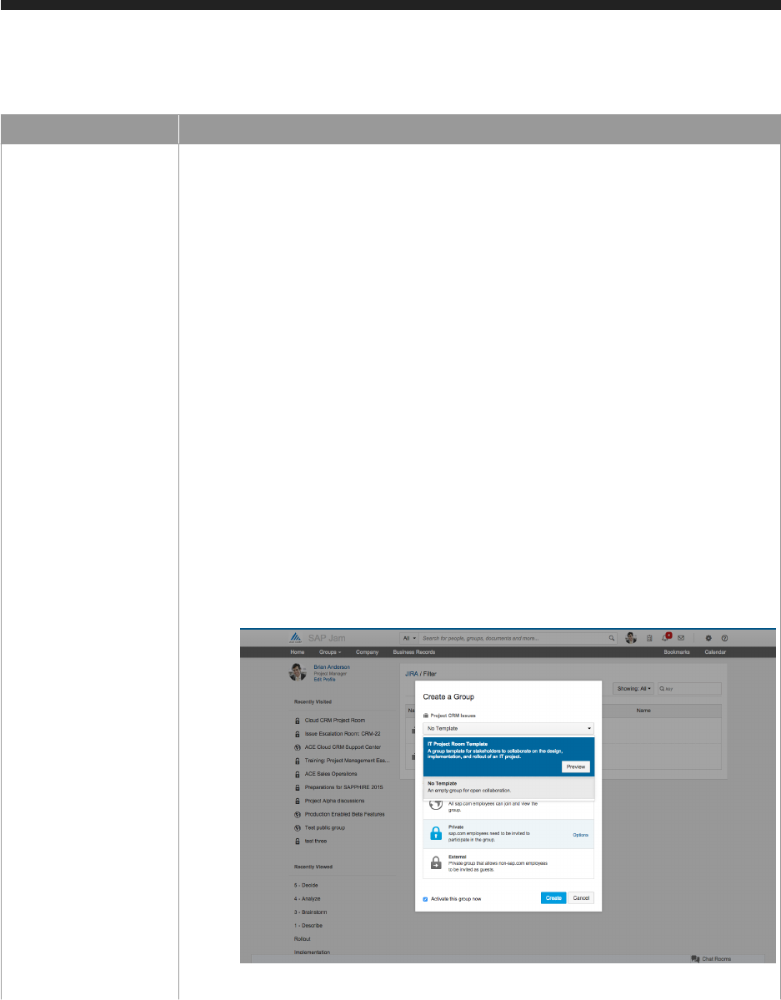

Enhancement Description
○ IT Project Room template: This template is for stakeholders to collaborate on the de
sign, implementation, and rollout of an IT project.
○ The Overview page contains a feed widget where QA leads can make important an
nouncements (e.g., critical go or no-go, escalations), achievements and risks, peo
ple widgets to help identify what role each member plays, content widgets to show
list documents and links, tasks widget to track active tasks or for items that require
follow-up, events widget to track key milestones, and related groups widget for
convenient navigation to other related groups.
○ The Inception page contains a content widget that displays important documents
and an events widget that displays milestones relevant for this phase of the project.
○ The Planning page contains a content widget that displays important documents
and an events widget that displays milestones relevant for this phase of the project.
○ The Implementation page contains a content widget that displays important docu
ments, an events widget that display milestones relevant for this phase of the
project, external business record list widgets that display various types of issues
from JIRA.
○ The Rollout page contains a content widget that displays important documents, an
events widget that displays milestones relevant for this phase of the project, and an
external business record list widget that displays and tracks defects from JIRA.
○ The Support page provides a content widget that displays key information about
the support process and a people widget which lists key support contacts.
Figure 6: Creating a new group with IT Project Room template
SAP Jam - IT Work Patterns with JIRA May 2015
Work patterns © 2015 SAP SE or an SAP affiliate company. All rights reserved.
11